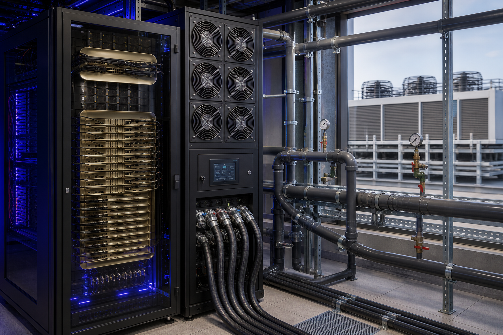
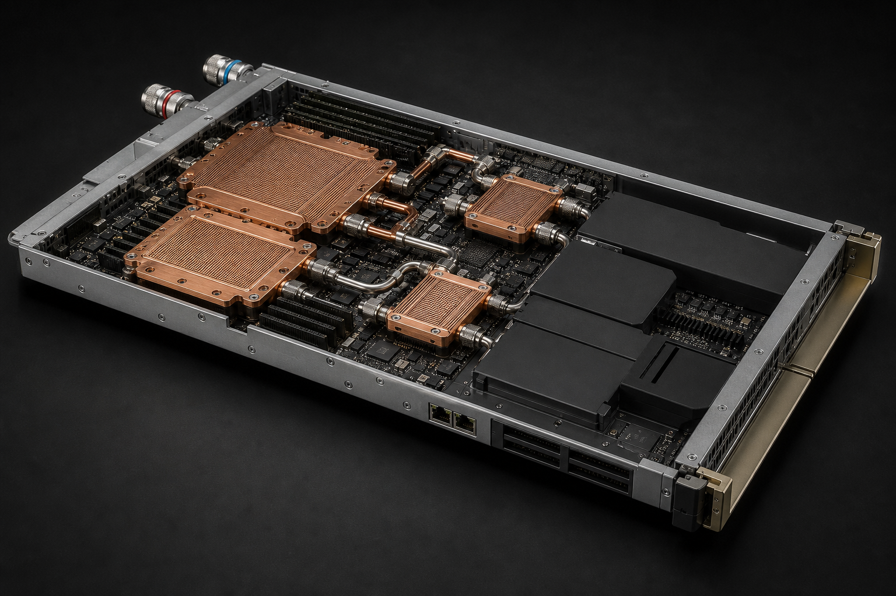

1. 概述
本报告面向NVIDIA GB300 NVL72液冷机柜的项目业主、设计院、系统集成商、设备供应商和运维团队，给出从芯片冷板/OEM机柜液路、CDU、设施高温水回路、室外冷源到残余空气冷却的完整总体设计基线。
| 项目 | 说明 |
|---|---|
| 设计目标 | 在具体OEM接口约束下安全排出最高155kW整柜峰值热量，兼顾可用性、能效、可维护性和后续扩容。 |
| 报告范围 | 客户需求转化、设施/IT责任界面、NVIDIA/华为/国标行标/ASHRAE-OCP需求规范对齐、系统架构、热工水力、关键设备、控制联锁、可靠性与故障模式、产品使用运维、FAT/SAT验收，以及可追溯数据来源。 |
| 设计层级 | 概念/FEED级总体设计；用于方案比选和技术规格输入，不代替OEM受控文件、施工图或设备制造图。 |
| 核心原则 | OEM工况表优先；TCS与FWS物理隔离；消除单点故障；按露点防凝露；所有安全动作可验证、可追溯。 |
| 使用限制 | 具体机柜流量、压降、工质、UQD和入口压力须以订单对应的OEM Interface Control Document冻结。 |
1.1 关键设计结果
| 设计主题 | 关键结果 | 设计含义 | 状态 |
|---|---|---|---|
| 负荷边界 | 单柜142kW公开参考；155kW客户产品峰值包络；液冷设备按150kW、残余空气侧按25kW分别选型 | 两侧裕量不得相加宣称175kW实际负荷；最终以订单OEM EDP及液/气热分配冻结 | FEED基线 |
| OEM水力包络 | 入口25–45℃对应3.54–10.62m³/h、机柜压降16–127kPa | 正式运行按OEM温度—流量—压降表控制，禁止用固定10K温升替代 | 待ICD冻结 |
| 总体架构 | 同源高温水：冷板/Manifold → TCS → L2L CDU → FWS → 闭式塔或绝热干冷器；残余热由CRAH/RDHx处理 | 优先液-液隔离；L2A仅作无一次水的试点/改造备选，不作为GB300生产基线 | 推荐方案 |
| 液/气热分配 | GB300 OEM约90%液冷/10%空气；行业混合基线常见70%–72%液冷 | 本项目按OEM 90%选型；集群扩容可按72/28校核风侧，不得把两种比例混成同一保证点 | OEM优先 |
| 比流量标尺 | 行业初筛1.0–1.5 L/min·kW；本平台FAT约1.44 L/min·kW；OEM表0.39–1.18 L/min·kW | 1.0–1.5仅用于10K温升初算；正式运行必须服从OEM温度—流量表 | 校核用 |
| 中断耐受 | GPU液冷中断窗口约90s；泵停/断流30–60s；气阻30–90s；供液超温60–120s；漏液立即停机 | 泵切换、旁通和安全链必须在窗口内自动完成，不能按传统机房30min恢复设计 | 控制硬约束 |
| 可用性 | 项目2套完整CDU工艺列1用1备；单机双泵1用1备；冷源N+1；关键泵与控制UPS续冷不少于5min | 设备、母管、阀门及控制均须支持故障切换和在线隔离维护 | 需SPOF验证 |
| 平台保证点 | FAT-A：32/42↔27/37℃、5K端温差；FAT-B：40/50↔37/47℃、3K端温差 | FAT点用于验证CDU平台，不直接等同于GB300机柜运行点 | 采购保证点 |
| 关键设备初选 | CDU平台最大19m³/h、候选泵总差压250kPa、板换污堵UA≥66.7kW/K；室外散热设备250kW/台初选 | 泵、板换和冷源均须由厂家依据工质、气象、压降及公差复核 | 初选/TBD |
| 实施前闸门 | OEM ICD、项目气象与水质、压力法规、HAZOP、厂家选型、FAT/SAT | 未完成上述冻结和验证，不得据本报告直接采购、施工或连接正式机柜 | 强制闸门 |
1.2 关键术语说明
FEED：前端工程设计，用于冻结主要边界和设备规格。 OEM：提供完整GB300机柜产品及受控接口数据的原始设备制造商。 ICD：接口控制文件，规定机柜与设施之间的温度、流量、压力、工质、电气及通信边界。 设计基线：后续变更必须受控追踪的批准输入集合。 置信度：高=NVIDIA/OEM/标准原文可直接引用；中=官方参考架构或白皮书、需项目复核；低/待核实=行业经验或无法交叉验证。
1.3 公开功率与冷却口径冲突及取舍（2026-08-21复核）
公开资料对“单柜功率”存在多套口径，不得相加或互相覆盖。本报告继续以155 kW作设备峰值包络、142 kW作NVIDIA公开参考、150 kW作液冷设备选型；采购保证点必须绑定订单OEM。
| 口径 | 公开数值 | 来源与访问日期 | 置信度 | 本报告取舍 |
|---|---|---|---|---|
| NVIDIA Enterprise RA 整柜 | Full rack requiring up to 142 kW；8×33 kW电源架 | NVIDIA NVL72 AI Factory — Components；2026-08-21 | 高 | 公开参考上限；设施规划常用此值 |
| Lenovo 产品指南 TDP / EDP | 135 kW TDP；workload/EDP行为下最高 155 kW | Lenovo LP2357 PDF；2026-08-21 | 高 | 本项目峰值包络取155 kW；持续点按OEM曲线 |
| Supermicro SuperCluster | Operating Power 132–140 kW；电源架合计132 kW | Supermicro GB300 NVL72 Datasheet；2026-08-21 | 高 | 另一OEM运行窗；证明“约120 kW+”偏保守且过时 |
| NVIDIA SuperPOD SU | 每SU（8套DGX GB300）TDP 1.2 MW，折合约150 kW/柜 | DGX SuperPOD GB300 RA；2026-08-21 | 中 | 含SU级配套，不得直接当作单柜保证点 |
| Schneider RD110 机房 | AI racks up to 142 kW/rack | RD110 DSR3-GB300；2026-08-21 | 高 | 设施参考设计，与NVIDIA RA一致 |
| 网络/博客“120 kW+ / 全液冷” | 约120–130 kW；或称100%液冷 | 第三方综述；常混用GB200口径 | 低 | 不采用。工程上按混合冷却：约90%液 / 10%气 |
1.4 需求规范对齐结论（2026-09-05复核）
结论：v2.1 已把 NVIDIA / Lenovo / Schneider / ASHRAE / OCP 的机柜与设施公开口径对齐到可追溯程度；但未建立规范优先级，也未纳入华为液冷可部署体系与中国国标/行标合规层。国内项目若只引用 NVIDIA/ASHRAE，验收、水质、蓄冷/UPS 时长和均流指标会对不上业主设计院常用的 GB 50174、YD/T 6358、GB/T 48023。本版把四套规范按“谁约束哪一层”拆开，禁止交叉拼接。
| 规范族 | v2.1 状态 | v2.2 判定 | 对本项目的约束力 |
|---|---|---|---|
| NVIDIA 产品页 / Enterprise RA / SuperPOD GB300 RA | 已引用功率、混合冷却、Tray/Rack漏液、Tier 3 | 产品与可用性：已对齐（2026-09-05 复核 RA 仍为 142 kW、液冷、8×33 kW）。设施细节仍缺官方秒级失冷窗口与 TCS 水质全文 | 最高：架构、漏液、可用性等级、公开功率参考 |
| 订单 OEM（Lenovo LP2357 / DS0207 等） | Table 27、90/10、W45、工质已冻结为运行依据 | 水力/工质：已对齐；回水温度、最大入口压力、UQD Cv、满配湿重仍待 ICD | 最高：TCS 入口温度—流量—压降、工质、UQD |
| Schneider RD110 / SuperPOD 设施 RA | 已用 N+1、5 min、40/50↔37/47 | 设施参考：部分对齐。5 min 是该 RA 热缓冲/冷却 UPS，不是 GB 50174 A 级默认 15 min | 中：FAT-B 与 UPS 初值；国内 A 级须单独决策 |
| 华为 Atlas SuperPoD / 《计算集群硬件 液冷可部署要求》 | 未引用 | 行业对标：本版补齐。用于 CDU 巡检、一次侧水质、补液电子级水、群控切换；不得改写 GB300 进水表 | 中：国内运维纪律与 FWS 水质加严；TCS 温度/工质不采用 |
| GB/T 48023、YD/T 6358/3982/6049、GB 50174 等 | 未引用 | 国内合规层：本版补齐。均流、换热能力、A 级蓄冷/UPS、施工验收与冷却液选取 | 高（国内落地）：设施设计、施工验收、测评；低于 OEM 时仍以 OEM 为准 |
| ASHRAE TC 9.9 / OCP ACS / IEC 62368-1 | 已有 W 类、FWS/TCS 分表、试验压力 | 大部分对齐。补 S 类（TCS 进液）与 W 类（FWS 供水）不得混称；补 TC 9.9 工质完整性公报 | 高：水温等级语义、水质分表、压力试验原则 |
| 第三方博客（介电液、120 kW、每 GPU 20 L/min 等） | 已弃用 120 kW+/全液冷 | 维持弃用。2026-09 仍见“介电液、3 bar、50 μm”等与 Lenovo DI/PG25 冲突的转述 | 无：不得进入规格书 |
2. 客户产品需求、设计输入与边界
结论：整柜兼容NVIDIA 142kW公开参考值及Lenovo 135kW TDP/155kW EDP峰值。150kW液冷和25kW空气侧是分别带裕量的设备选型值，不代表175kW同时发生的机柜实际热量。项目基线采用2×200kW L2L CDU（1用1备）；32/42↔27/37℃和40/50↔37/47℃仅作为CDU平台FAT工况，不直接等同于Lenovo机柜运行点。具体机柜运行必须由OEM入口温度—流量—压降表及受控回水温度共同冻结。
2.1 客户产品调研与需求转化
| 客户/产品证据 | 公开需求 | 本设计转化 |
|---|---|---|
| NVIDIA GB300 NVL72参考架构 | 72×B300、36×Grace、18 Compute Tray、9 NVSwitch Tray；最高142 kW；混合液冷；Tray和Rack集成漏液检测 | 保留完整残余风冷；漏液信号接入CDU/BMS；不得按“全液冷、零风量”设计 |
| Lenovo GB300 NVL72产品指南 | 135 kW TDP、最高155 kW峰值；约90%液冷/10%空气；DI水推荐或PG25；顶部/底部进水；ASHRAE W45 | 155 kW峰值包络；液冷设计150 kW、空气侧25 kW；工质/进水方向做订单配置 |
| Lenovo机柜水力表 | 入口25/30/35/40/45℃对应59/71/89/119/177 L/min；机柜压降2.3/3.2/4.9/8.5/18.4 psi | CDU需覆盖3.54–10.62 m³/h及16–127 kPa机柜压降，不以固定10 K温差反推值替代OEM流量表 |
| Schneider GB300 Reference Design 110 | 142 kW/柜；L2L CDU N+1；TCS 40/50℃、CDU FWS 37/47℃；高温水回路；冷却续航5 min；CDU和FWS泵由UPS供电 | 增加暖水工况和5 min热惯性/UPS要求；项目级CDU采用N+1并支持并机群控 |
| 数据中心运维客户 | 并发可维护、在线过滤、漏液定位、DCIM接入、备件与服务可得、维护不影响IT | 双联过滤、泵可隔离更换、双电源、本地自治、趋势/审计、关键备件包和SLA |
| 华为 Atlas SuperPoD / 液冷可部署要求（行业对标，非本机柜OEM） | 一次侧钙硬度≤200 mg/L、缓蚀/杀菌/阻垢必需、季度取样；补液 GB/T 11446.1 EW-IV；来料菌落<1 CFU/mL、Cl⁻≤10 mg/kg；CDU 二次侧供液巡检 Tso<40℃、建议设定 30/35℃、偏差±3℃；液冷门一次水 5–32℃ | 吸收 FWS 水质加严、补液电子级水、CDU 巡检点表与群控切换；不采用其乙二醇二次侧、Tso<40℃ 上限和液冷门 5–32℃ 作为 GB300 运行点 |
| 中国国标/行标合规层 | GB 50174 A 级并发维护与蓄冷/冷却 UPS；YD/T 6358 一二次侧架构、CDU 冗余、检漏；GB/T 48023 支路均流≤10%、额定换热≥95%；YD/T 3982 冷却液选取；东数西算 PUE 东部≤1.25 / 西部≤1.2 | 国内项目写入设计说明与 SAT；均流与 95% 换热列入验收；PUE 仍由业主给目标，本单柜 FEED 不承诺数字 |
2.2 可冻结的设计输入矩阵
| 输入类别 | FEED包络/默认值 | 客户必须提供 | 冻结输出 |
|---|---|---|---|
| IT热负荷 | 142kW参考；155kW峰值；150kW液冷和25kW空气侧为独立设备选型值，裕量不叠加为实际热量 | OEM/配置号、TDP/EDP曲线、液/气侧同时热分配、功率封顶策略 | 持续/峰值/设备选型三张负荷表 |
| TCS接口 | DI水或PG25；25–45℃；3.54–10.62m³/h；压降16–127kPa | OEM冷却液规范、最低/额定/峰值流量、最大入口压力、UQD和顶/底进水 | 签字版ICD和OEM流量—温度—压降表 |
| 温度工况 | A/B为CDU平台换热保证点；Lenovo机柜按25–45℃OEM表运行，回温不得先验固定10K | 全年FWS温度、OEM回水温度/最大温升、机房露点、热回收需求 | 平台FAT工况表+OEM运行工况表，禁止混用 |
| 可用性 | 设备内双泵；项目2×200kW CDU 1用1备；冷源N+1；关键泵/控制UPS≥5min | Tier/EN50600目标、允许停机窗口、业务迁移时间、UPS自治时间 | 单点故障分析、维护旁路和Cause & Effect |
| 场地接口 | DN65初选；双路电源；BMS/DCIM接口 | 气象、海拔、水质、电源制式、承重、尺寸、噪声、排水、网络安全 | Site Data Sheet、接口图和点表 |
2.3 分层保证工况（不得交叉拼接）
| 工况层级 | 用途 | 绑定参数 | 严谨性边界 |
|---|---|---|---|
| OEM机柜运行点 | 正式连接GB300机柜 | 入口25/30/35/40/45℃；对应59/71/89/119/177L/min及2.3/3.2/4.9/8.5/18.4psi；工质和回温由OEM ICD给定 | 不得再强加固定10K温升；公开表对应工质仍须OEM确认 |
| 项目液冷设计点 | 项目设备容量与冗余 | 150kW选型负荷；具体四温、两侧流量和压降由OEM/项目联合冻结 | 未冻结前不能宣称150kW可在OEM任一公开流量点实现 |
| CDU平台FAT-A | 低端温差5K性能验证 | DI水200kW；TCS 32/42℃；FWS 27/37℃；TCS约17.3m³/h | 独立试验环路，不直接施加至机柜 |
| CDU平台FAT-B | 暖水3K端温差验证 | DI水200kW；TCS 40/50℃；FWS 37/47℃；换热器污堵UA≥66.7kW/K | 属于Schneider设施参考工况，不替代OEM ICD |
| PG25平台点 | 工质兼容与降额 | 按ρ≈1025kg/m³、cp≈3.78kJ/(kg·K)估算，200kW/10K需约18.6m³/h | 产品平台按19m³/h校核；最终物性取冷却液厂家曲线 |
2.4 关键术语说明
TDP：持续热设计功率。 EDP峰值：特定工作负载下可能出现的电气/热峰值。 工况包：绑定温度、流量、压降、工质和容量的成套保证条件。 包络：产品必须覆盖的参数范围，而非单一连续运行点。 W45：ASHRAE W 类是设施一次水（FWS）供水等级；产品资料里的 W45 常被 OEM 用来声明设备水温能力，须与 S 类（TCS 进液）分开写，见 2.12。 端温差/ATD：板换同一端两种流体之间的接近温差；FAT-A热端42−37=5 K、冷端32−27=5 K，不等于单回路10 K供回液温差。 FAT-A：CDU常规5K端温差工厂验收点，DI水条件下TCS 32/42℃、FWS 27/37℃。 FAT-B：CDU暖水3K端温差工厂验收点，DI水条件下TCS 40/50℃、FWS 37/47℃；用于验证更高的板换UA能力。FAT-A/B均为CDU平台试验工况，不是GB300机柜固定运行参数。
2.5 完整客户需求规格（IT / 设施 / 运维 / 验收）
下列需求把业主、IT、设施、集成商和运维的可验收条款写全。未标注“待核实”的条款均有公开出处或本FEED已冻结的工程原则；精确保证值仍须由订单OEM ICD替换。
| 需求域 | 客户要求（可写入合同） | 本设计响应 | 验收/验证方法 |
|---|---|---|---|
| IT算力与可用性 | 单柜72×Blackwell Ultra + 36×Grace作为单一NVLink域连续训练/推理；冷却不得成为业务单点。目标对齐NVIDIA建议的Uptime Tier 3 / TIA-942-B Rated 3 / EN 50600 Availability Class 3：并发可维护、无单点故障。 | 2×200 kW L2L CDU 1用1备；单机双泵；冷源N+1；关键泵/PLC/阀UPS≥5 min；漏液与超温联锁到功率封顶。 | 单点故障审查、故障注入SAT、业务不中断或约定窗口内降载。 |
| 热设计点 | 覆盖NVIDIA公开142 kW与Lenovo 135/155 kW；液/气热分配按OEM约90/10，不得按全液冷取消风侧。 | 液冷设备150 kW、空气侧25 kW分别选型；裕量不叠加为175 kW实际热量。 | OEM EDP曲线+实测整柜进出液/进出风能量平衡，偏差写入调试限值。 |
| 进水温度与品质 | 机柜入口服从OEM温度—流量表（公开25–45℃）。Lenovo datasheet暖水18–45℃；Switch Tray写2–50℃且W45。W类是水温等级不是水质。TCS与FWS水质分表，禁止把TCS指标强加给园区一次水。 | 运行按OEM表；TCS供液≥机房露点+3 K（联锁+2 K）。水质见2.8，以OEM规范为上限。 | 入口TT/FT趋势落入OEM表；水质化验与在线电导率/pH；露点裕量记录。 |
| 流量与压差 | 入口25/30/35/40/45℃对应59/71/89/119/177 L/min及2.3/3.2/4.9/8.5/18.4 psi（Lenovo Table 27）。禁止用固定10 K温升反推流量替代该表。 | CDU覆盖3.54–10.62 m³/h及16–127 kPa机柜压降；入口绝压、流量、压降三重限幅。 | FAT独立环路+SAT接真实机柜查表点；压降在OEM窗内。 |
| 漏液检测 | NVIDIA要求Tray级与Rack级液漏检测。客户可要求第三方漏盘/定位线接入OOB与CDU。 | 机柜底盘+CDU+接头+冷源分区；点式+定位线；严重漏液硬接线立即动作。 | 注水/模拟漏点、压力突降、低低液位联锁演练；复位须保压合格。 |
| 维护窗口 | GPU液冷中断窗口约90 s（行业经验，待核实/非NVIDIA原文）。计划维护应在线隔离一台CDU/一台泵/一只过滤器而不停IT。 | 泵重叠切换目标≤15 s；双联过滤；完整CDU列可隔离；备件与LOTO。 | 每周/半年故障演练记录；切换期间流量不低于OEM下限。 |
| PUE / WUE | 业主应给出全年PUE与WUE目标。政策参考：工信部新型数据中心大型及以上 PUE≤1.3；东数西算枢纽东部（含华南）≤1.25、西部≤1.2。Schneider RD110 巴黎/新加坡参考年化 PUE 1.09 / 1.16（100%负荷）属该 RA，非本项目保证。 | 高温L2L+自然冷优先；残余风冷最小化；补水仅用于开式/绝热侧。本单柜FEED不承诺PUE/WUE数字。 | 全年逐时能耗与补水计量；IT电能、冷却电能、补水量分项；对照业主合同目标而非政策口号。 |
| 国内等级与蓄冷/UPS | 国内落地按 GB 50174 A 级理解 NVIDIA 的 Tier 3 / TIA-942-B Rated 3：并发可维护、无单点故障。A 级宜设蓄冷，供冷时间宜与 IT UPS 一致；团体/行业液冷规范常见冷却 UPS不宜小于 15 min。RD110 冷却 UPS 为 2N、5 min，两套口径不得默认同义。 | FEED 保留 5 min 热惯性+关键泵/PLC UPS 作为最低；国内 A 级项目默认按冷却电气自治≥15 min 或与 IT UPS 等长做方案比选，由业主书面选定。 | 切换试验记录自治时间；蓄冷有效冷量覆盖冷机再启动；未选定前不得只写 5 min 出图。 |
| 均流与换热能力（国标验收） | GB/T 48023-2026：二次侧各支路流量最大与最小之差≤全部支路算术平均值的 10%；额定工况实际换热能力≥设计负荷 95%。YD/T 6358 要求系统调试在 CDU 安装合格后进行。 | 18 Compute + 9 Switch 支路在 SAT 测均流；CDU 平台 FAT 按 200 kW 保证，接柜后按 OEM 表点复核，不得用 95% 条款放松 OEM 下限流量。 | 支路流量表+能量平衡；超差先查气阻/阀位/滤芯，再改泵曲线。 |
| 监控协议（NVIDIA RA） | Enterprise RA 管理节点 BMC 要求 Redfish 1.4 及以上、SoL、IPv6。冷却遥测须能被 BMS/DCIM/NVIDIA Mission Control 读取；通信中断时本地自治。 | Modbus TCP、SNMPv3 为冷却最低；Redfish/MQTT 选配但对齐 RA 管理面。点表含 T/P/F、差压、液位、漏液、水质、阀位、泵状态。 | 点表 100% 对点；Redfish 版本写入 ICD；通信中断演练。 |
| 接口责任界面 | 冷板/Tray/柜内歧管/UQD属OEM；TCS软管及下游属冷却集成；FWS及室外冷源属设施。见2.6。 | 合同附图标明分界法兰/软管、电源、通信、排水、漏液信号。 | ICD会签、接口点表、SAT联调签字。 |
| 冗余 | 冷却工艺N+1；冷却关键回路UPS建议2N（RD110冷却UPS为2N、5 min）；IT配电按OEM电源架（常见6+2或8路）。 | CDU 1+1；塔/干冷器1+1；FWS泵1+1；CRAH 1+1；公共母管做SPOF审查。 | 任一工作设备退出时，温度/流量保持在OEM窗或触发约定降载。 |
| 监测与告警 | BMS/DCIM/NVIDIA Mission Control可读取冷却遥测；通信中断时本地自治。最低点：T/P/F、差压、液位、漏液、水质、阀位、泵状态。 | Modbus TCP、SNMPv3、MQTT/Redfish选配；趋势≥13个月；Cause & Effect闭环。 | 点表100%对点；传感器故障与通信中断演练。 |
| 安全与环保 | 设备符合IEC/UL 62368-1；管路按适用的ASME B31.3或地方法规；工质可生物降解优先（DI或PG25）；废液分类回收；冷凝与触电防护。 | TCS/FWS隔离；PSV排至收集箱；Spill kit；禁止汽车防冻液。 | 压力试验、材料清单、MSDS、废液转移联单。 |
| 验收指标 | FAT稳态温控±0.5℃；SAT 72 h连续；冲洗后颗粒/水质达标；设计负荷下入口温度—流量—压降落在OEM表；无不可接受泄漏。 | 第8章FAT/SAT/爬坡；第9章可靠性验证矩阵。 | 签字报告+原始曲线；未通过不得连接正式业务。 |
2.6 责任界面（IT 机柜 vs 设施 vs 冷却集成）
| 界面点 | IT / OEM机柜 | 冷却系统集成 | 数据中心设施 |
|---|---|---|---|
| 热源与冷板 | 冷板、Tray内管路、盲插、柜内Manifold、漏液传感器 | 不改OEM内部液路；只读OEM测点（若提供） | 不负责芯片热阻 |
| TCS供回接口 | 给出温度—流量—压降、最大入口压力、工质、顶/底进水、UQD型号 | 软管/阀/仪表至CDU；保证接口落在OEM窗 | 提供安装空间、承重、排水 |
| CDU | 提出TCS品质与联锁信号需求 | 供货、控制、FAT、备件 | 一次水、双路电源、网络、冷凝排水 |
| FWS / 室外冷源 | 无 | 提出FWS温度/流量/水质/压差需求 | 冷源、水处理、膨胀、规范合规、气象保证 |
| 残余空气冷却 | 机柜风扇、进风温湿度限值（Lenovo计算Tray ASHRAE A2；Switch Tray写A3，以订单OEM为准） | 协调通道封闭与末端选型 | CRAH/RDHx、新风过滤MERV 8/11/13 |
| 电力 | 电源架、48/50 V母排、功率封顶接口 | CDU/泵/阀用电与UPS名单 | 市电、柴发、IT UPS、冷却UPS |
| 控制 | BMC/Rack Manager/漏液、功率封顶 | CDU PLC本地自治与安全链 | BMS/DCIM、网络安全分区 |
| 应急 | 降载/迁移/停机决策 | 秒级切泵、隔离、请求降载 | 5 min热缓冲、冷源再启动、消防与排水 |
2.7 机柜物理、电力与设施接口（公开值）
| 项目 | 公开值 | 来源 / 日期 / 置信度 | 设计含义 |
|---|---|---|---|
| Lenovo 48U MGX机柜外形 | 宽600 × 高2294 × 深1068 mm；加延伸框深1200 mm；空柜质量185 kg | LP2357 Physical specifications；2026-08-21；高 | 通道、搬运、抗震按满配质量另算（满配待OEM冻结） |
| Supermicro机柜外形 | 2236 × 600 × 1068 mm | SuperCluster datasheet；2026-08-21；高 | 高度与Lenovo 2294 mm冲突，布置按订单机柜 |
| Compute Tray | 438×43.6×766 mm（含水接头约799 mm）；29 kg | LP2357；高 | 维护需升降设备 |
| NVSwitch Tray | 438×43.6×770 mm；17 kg；工作水温2–50℃（W45） | LP2357；高 | W45是该Tray声明，整柜运行仍查Table 27 |
| 电源架 | 最多8×33 kW（每架6×5.5 kW）；6架198 kW或8架264 kW装机容量；约50 V母排 | NVIDIA RA + LP2357；高 | 装机容量>IT负荷；馈线按OEM（RD110写每架一对63 A） |
| Manifold | 后左/后右供回；顶进CA40或底进C5RN；304L/316L；UQDB04；排气UQD04；软管卡箍；QD处静压30 psi | LP2357 Table 17/18；2026-08-21；高（30 psi上下文需ICD确认） | 30 psi≈207 kPa为接口静压公开值，不得当作泵扬程 |
| 工质与进水方向 | DI水（推荐，出厂不带水）或PG25；顶/底进水可选 | LP2357 / DS0207（2026-03-16）；高 | 订单配置；物性影响流量与泵 |
| 声学 | 声压至82.9 dB；估计柜后约92 dBA | LP2357；中 | 机房职业卫生与相邻机柜布置 |
| 空气侧环境 | 计算Tray：ASHRAE A2，10–35℃，20–80%RH不结露；海拔0–1524 m，300 m降额1℃ | LP2357；高 | 残余CRAH必须保证进风，高温FWS不能自动等同 |
2.8 水质、过滤与工质（ASHRAE / OCP / OEM）
ASHRAE将一次侧FWS与二次侧TCS分章给水质表。误用（把TCS指标要求园区冷却水，或把FWS水质送进微通道）是液冷项目最常见规格错误。下表转写ASHRAE TC 9.9白皮书对2014版《Liquid Cooling Guidelines》Table 5.3 / 6.2的摘录，低于OEM规范时以OEM为准。
| 参数 | FWS（设施一次水） | TCS（冷板回路） | 本项目执行 | 来源 / 置信度 |
|---|---|---|---|---|
| pH | 7–9 | 8.0–9.5 | 在线监测；超限取样复核 | ASHRAE TC9.9 WP Table 1；中（2014版） |
| 电导率 | — | 0.2–20 micromho/cm | DI回路按此窗；PG25按冷却液厂家 | 同上；中 |
| 氯离子 | <50 ppm | <5 ppm | 补液源必须检测 | 同上；中 |
| 硫酸根 / 硫化物 | <100 / <10 ppm | <10 / <1 ppm | 季度化验 | 同上；中 |
| 总硬度（CaCO3） | <200 ppm | <20 ppm | FWS阻垢；TCS近DI | 同上；中 |
| 细菌 | <1000 CFU/mL | <100 CFU/mL | TCS要杀菌剂策略（OEM批准） | 同上；中 |
| 浊度 / TSS | <20 NTU / — | <20 NTU / <3 ppm | 冲洗达标后再连机柜 | 同上；中 |
| 缓蚀剂 | 需要 | 需要 | 材料清单兼容 | 同上；高（原则） |
| 过滤 | 旁滤50–100 μm常见 | 本项目TCS 25 μm（严于行业<50 μm）；OCP有文献写投运≤25 μm、稳态≤10 μm | 双联可切换；禁止未过滤直通 | OCP CDU Guidance（中）；OEM优先 |
2.9 规范优先级、适用范围与禁止事项
四套文献说的是不同对象。把华为 Atlas 的二次侧乙二醇、液冷门 5–32℃ 或“Tso<40℃”写进 GB300 规格书，与把 NVIDIA 142 kW 当成 Lenovo 155 kW 保证点，属于同一类错误。
| 层级 | 管什么 | 不管什么 | 本项目执行 |
|---|---|---|---|
| L1 订单 OEM ICD | 机柜入口温度—流量—压降、最大入口压力、UQD、工质、液/气热分配、功率封顶 | 园区一次水配方、冷塔形式、PUE 合同数字 | 签字前不得连接正式业务 |
| L2 NVIDIA RA / SuperPOD | 液冷架构、Tray+Rack 漏液、电源架、可用性等级、混合冷却事实、管理面 Redfish | 具体 L/min、CDU 品牌、国内施工图深度 | 已对齐；2026-09-05 复核 142 kW 未变 |
| L3 强制法规 + 国内合规 | GB 50174 等级、GB 50462 验收、特种设备、排放、YD/T 6358 架构与测评、GB/T 48023 均流/换热（2027-02-01 实施，FEED 先行采用） | 芯片冷板热阻、NVLink 拓扑 | 国内项目写入设计说明；海外项目仅作对标 |
| L4 ASHRAE / OCP / IEC | W/S 水温语义、FWS 与 TCS 分表、UQD、试验压力原则 | 替代 OEM 流量表 | 国际底线；低于 OEM 时取 OEM |
| L5 华为液冷可部署 / Atlas 运维 | 一次侧硬度与药剂、电子级补液、CDU 巡检清单、过滤器压差、群控切换 | GB300 二次侧温度上限、乙二醇浓度、液冷门一次水 | 只吸收加严且不冲突条款 |
2.10 英伟达 / 华为 / 国标行标 / ASHRAE 条款对齐矩阵
下表只列影响本 FEED 决策的条款。华为列为同业规范，用于证明国内智算液冷的通行做法，不是本机柜的 OEM。
| 需求主题 | NVIDIA / OEM | 华为公开运维与可部署要求 | 国标 / 行标 / 政策 | ASHRAE / OCP | 本设计对齐结果 |
|---|---|---|---|---|---|
| 冷却形态 | RA：rack is liquid cooled；产品页 fully liquid-cooled；Lenovo/SuperPOD：hybrid，约 90/10 | Atlas 为冷板+CDU+（可选）液冷门的混合系统，一次/二次隔离 | YD/T 6358、GB/T 48023 定义冷板式=间接换热，含 CDU 隔离；不适用于相变冷板 | FWS / TCS 分回路；CDU 为分界 | 对齐。维持混合冷却，保留 CRAH/RDHx |
| 单柜热/电 | RA 最高 142 kW；Lenovo 135/155；SuperPOD SU 1.2 MW/8 柜 | Atlas 柜功率随配置，不用于本保证点 | 不规定 GB300 千瓦数 | 无单柜强制千瓦 | 对齐 NVIDIA/OEM。三口径不相加 |
| TCS 进液温度 | Lenovo 表 25–45℃；datasheet 暖水 18–45℃；Switch Tray 写 2–50℃/W45 | CDU 巡检：Tso<40℃，建议设定 30℃ 或 35℃，与设定差±3℃（Atlas，2026-06/08 文档） | 二次侧供液由电子信息设备热设计确定；缺资料时部分设计指南写“不宜低于 40℃ / 温差不宜低于 10℃”——与 OEM 表冲突时作废该缺省 | W 类=FWS；S 类=TCS 进液；合规=全温度范围满性能不节流；下限相对露点 | 以 OEM 表为准。华为 40℃ 上限仅作同业对照。FAT-A/B 仍是 CDU 平台点 |
| 流量与压降 | Table 27 成对点；禁止 10 K 反算 | 一次侧液冷门压差异常阈值约 46 kPa（水）/ 81 kPa（体积分数 50% 乙二醇） | GB/T 48023 支路均流≤10%；比摩阻宜 50–200 Pa/m（工质相关，设计指南级） | 无 GB300 专用 L/min | OEM 表 + 国标均流。华为压差不套用到 GB300 Manifold |
| 工质 | DI（推荐）或 PG25；出厂不带水 | 二次侧常见乙二醇水溶液；20% 走上偏差 20–22%、25% 走下偏差 23–25%；室外机 EG 浓度随极端低温 | YD/T 3982 选取/维护/测试；GB/T 11446.1 电子级水作补液（华为明确引用 EW-IV） | PG25 为常见 TCS；与水基表不同须整表切换 | TCS 只用 OEM 的 DI 或 PG25。FWS 防冻若用 EG，只在一次侧，与 TCS 隔离。禁止汽车防冻液 |
| 一次侧水质 | 服从设施+OEM 对 FWS 的接口 | 2025-09-30 第 08 版：钙硬度由 ≤300 改为 ≤200 mg/L；缓蚀剂、杀菌剂、阻垢剂必需；参考 ASHRAE TC 9.9；季度满瓶取样 | YD/T 6358 引用 GB/T 29044 闭式空调循环水；GB 50174 水质与补水 | FWS：pH 7–9，硬度<200 ppm，Cl⁻<50 ppm | FWS 按 ASHRAE∩华为取严：硬度≤200 mg/L + 三剂 + 季度化验。与 2.8 表一致 |
| 二次侧水质 / 新液 | OEM + ASHRAE TCS 窗；运行菌落<100 CFU/mL | 来料：Cl⁻≤10 mg/kg，SO₄²⁻≤25 mg/kg，菌落<1 CFU/mL；禁磷酸盐；金属离子分项；GB 29743.1 稳定性 | YD/T 3982；GB/T 48023 附录二次侧冷却液（FEED 未获全文，订单索取） | TCS 电导率 0.2–20 micromho/cm（水基） | 新液验收取严（华为/YD），运行窗用 ASHRAE+OEM。PG25 整表切换 |
| 过滤 | 微通道敏感；本项目 TCS 25 μm | CDU 一/二次侧过滤器堵塞与压差告警为必检项 | 二次侧过滤须匹配最敏感部件（冷板/UQD） | OCP：投运≤25 μm、稳态有文献写≤10 μm；行业常写<50 μm | 已对齐并偏严。双联可切换；华为式压差告警写入 CDU 点表 |
| 漏液 | Tray 级 + Rack 级集成检测 | CDU 漏液告警、接水盘、管路卡箍目视；液冷柜气密/注液程序 | YD/T 6358：歧管氦检（公开转述 0.6 MPa，泄漏率<7×10⁻⁷ Pa·m³/s）、接头插拔泄漏限值 | OCP：人工→电气→关阀分级 | 对齐 NVIDIA 分级 + 国标检漏方法。设施侧保压按第 9 章，不在 FEED 锁死 0.5% |
| 冗余 / 可维护 | SuperPOD：Tier 3 / TIA-942-B Rated 3 / EN 50600 Class 3，并发维护、无 SPOF | CDU 组网与切换设置为巡检项；泵/过滤器在线维护是国内智算通行要求 | GB 50174 A 级；YD/T 6358：分布式 CDU 邻柜互备、集中式故障不得危及系统安全；分布式智算 CDU 能力公开转述 ≥40 kW（柜内式，与本项目行级 200 kW 不是同一产品） | 冷源与泵 N+1 为惯例 | 对齐。维持 2×200 kW 1+1，不用华为柜内 40 kW 口径 |
| 失冷 / UPS | 无公开秒级窗口；RD110 冷却 UPS 5 min、2N | 关键泵、控制宜 UPS；具体分钟数以项目 CDU 手册为准 | GB 50174 A：蓄冷宜与 IT UPS 等长；液冷团体规范常见冷却末端/泵 UPS ≥15 min | 无统一秒级 | 部分对齐，已单列决策。90 s 仍标行业经验；5 min vs 15 min 由业主选 |
| 防凝露 | TCS≥露点+3 K（本 FEED）；联锁+2 K | 液冷门查凝露；管路保温 | 一次供水宜高于室内露点 2–3℃ | TCS 下限相对露点 | 对齐。维持 +3 K / 联锁 +2 K |
| 监控 | Mission Control；BMC Redfish 1.4+ | CDU 本地面板点：Tpi、Ppfi、Tsi、Tso、Pso、Pspi、液位、滤堵、组网 | YD/T 6358 监控章；GB/T 51314 运维 | — | 点表按华为巡检清单补齐 CDU 测点名称，协议按 NVIDIA/BMS |
2.11 国内落地合规层（设计院 / 业主常用）
海外交付可以只做到 L2+L4。在中国大陆建设或验收，下列文件应出现在设计说明“依据标准”表中。GB/T 48023-2026 于 2027-02-01 实施，但 2026-07-30 已发布，FEED 按“即将实施、条款可先行采用”处理。
| 文件 | 状态 / 日期 | 与本项目的关系 | 本设计已响应的条款 |
|---|---|---|---|
| GB 50174-2017 数据中心设计规范 | 现行强制（设计） | 等级、空调/冷源、蓄冷、管网、电气 | 按 A 级对齐 NVIDIA Tier 3；环状或双供双回 FWS；蓄冷/冷却 UPS 见 2.5 |
| GB 50462 数据中心基础设施施工及验收规范 | 现行 | 施工、冲洗、试压、交接 | 第 8 章 SAT 引用；连接机柜前锁定滤芯 |
| GB/T 51314 数据中心基础设施运行维护标准 | 现行 | 运维制度、巡检、应急 | 第 7 章周期；可与 T/CIE 342-2025 液冷运维指南并用 |
| GB/T 48023-2026 数据中心冷板式液冷系统技术规范 | 2026-07-30 发布 / 2027-02-01 实施；华为数字能源等参编 | 系统组成、组件、均流、换热、群控、二次侧冷却液附录 | 均流 10%、换热 95% 写入验收；不适用于相变冷板（本项目为单相） |
| YD/T 6358-2025 冷板式液冷数据中心技术要求 | 2025-08-01 实施；华为技术有限公司参编 | 一二次架构、CDU、机柜、冷却液、建筑机电、测评 | 集中式行级 CDU+邻列 N+1；引用其规范性引用（GB/T 29044、YD/T 3982、GB 50174） |
| YD/T 3982-2021 数据中心液冷系统冷却液体技术要求和测试方法 | 现行；华为、联想等参编 | 冷却液选取、维护、测试 | 工质选型与化验方法；不替代 OEM 材料清单 |
| YD/T 6049-2024 冷板式液冷整机柜服务器技术要求和测试方法 | 2025-02-01 实施；华为参编 | 整机柜服务器产品测试 | 机柜侧由 OEM 举证；集成商不重复做芯片级测试 |
| YD/T 3980-2021 / 4024-2022 等液冷服务器系列 | 现行 | 服务器/系统级技术要求与能效 | 作为测评索引，不改本 FEED 水力表 |
| GB/T 29044-2012 采暖空调系统水质 | 现行 | 闭式空调循环水（FWS 常用引用） | FWS 底线；与华为≤200 mg/L 硬度一并执行 |
| GB/T 11446.1 电子级水 | 现行 | 华为规定补液 ≥EW-IV | TCS 补液/配液用电子级水，不用生活饮用水直接补 TCS |
| T/CIE 342-2025 冷板式间接液冷运维指南 | 团体标准 | 巡检、化验、应急组织 | 与第 7 章、华为 CDU 巡检清单对照，不另造第三套周期 |
| 东数西算 / 工信部绿色数据中心政策 | 政策 | PUE 门槛 | 只作文案与计量分项，不作单柜保证值 |
2.12 水温等级语义（W 类 / S 类）与华为温度窗对照
ASHRAE 现行液冷表述把设施一次水称 W 类（W17/W27/W32/W40/W45/W+，下限 2℃），把进入 IT 的 TCS 供液称 S 类。CDU 端温差是两者的换算，不是同一数字。
| 说法 | 实际指什么 | 本项目对应 | 常见误用 |
|---|---|---|---|
| Lenovo / 产品 W45 | 设备允许的水温等级边界（IT 侧） | 产品声明；运行仍查 Table 27 的 25–45℃ 点 | 把 W45 当成 FWS 可以到 45℃ 且无流量增量 |
| Schneider / FAT-B：TCS 40/50、FWS 37/47 | CDU 平台 3 K 端温差试验 | FAT-B，不替代 40℃/119 L/min 机柜点 | 把 40/50 写成机柜供回保证 |
| 华为 Atlas Tso<40℃、建议 30/35℃ | 其 CDU 二次侧供液巡检窗 | 仅对照：本项目 OEM 允许更高进水，但更高进水必须加流量 | 写成 GB300 硬上限 40℃ |
| 华为液冷门 5–32℃ | 后门热交换器的一次水 | 若本项目用 RDHx 处理 10% 余热，可作 RDHx 一次水参考，不是冷板 TCS | 灌进 Manifold |
| W32 机房 + 5 K 端温差 | FWS 供水≤32℃ 时，TCS 进液约 37℃（S37 量级） | FAT-A 的 27/37↔32/42 是另一组 5 K 端温差，不要和 W32 混叫 | “设施 W32 所以机柜也是 32℃ 进水” |
2.13 关键术语说明（本章增补）
规范优先级：冲突时先看约束对象再取严，禁止把不同对象的数字填进同一保证点。 S 类：ASHRAE 对 TCS 进液温度的等级。 W 类：对 FWS 供水温度的等级。 行业对标：华为等厂商公开运维要求，用于证明国内通行做法，不是本订单 OEM。 合规层：国内设计院出图、施工验收、测评必须列出的 GB/YD/T。 EW-IV：GB/T 11446.1 电子级水等级，华为用作补液底线。
3. 完整冷却系统架构与系统原理图
系统分为三条热传递链：① 芯片至 TCS 二次侧；② CDU 板换至 FWS 一次侧；③ FWS 至室外环境。残余空气热量由机柜风扇和近端 CRAH/RDHx 处理，可最终并入同一 FWS 冷源。架构先按“同源/非同源、高温/低温、L2L/L2A”三轴选型，再进入单柜P&ID；多部件图按真实外形尺度绘制，避免把冷板、机柜、CDU和室外冷源画成同一尺寸。
3.0 液冷架构选择
| 决策轴 | 可选路径 | 适用条件 | 本项目结论 |
|---|---|---|---|
| 风/液 | 全风冷；风液混合；近全液冷 | 长期建设规模、服务器类型、液气比、水温 | GB300必须液冷；按OEM约90%液冷+10%空气补冷 |
| 冷源同源性 | 同源：液冷与补冷共用一次水；非同源：风冷+液冷自由组合 | 机房是否已有冷冻水、是否允许两套冷源 | 推荐同源高温水，补冷优先接同一FWS或独立低温支路 |
| 水温 | 高温：干冷器/冷却塔；兼容低温：冷机+冷冻水/水冷末端；氟液：风冷冷凝器+氟液CDU | 冷源条件、PUE、节水、分期部署 | 基线走高温L2L；仅当全年无法维持FWS目标时增加峰值冷机 |
| CDU形式 | L2A风液型；L2L液液型 | 有无一次水、单柜功率、出柜率 | 生产部署用L2L；L2A仅用于无一次水的实验室/改造试点 |
图 3-0 说明：架构选择先定冷源同源性和水温，再定CDU形式。GB300生产部署冻结为同源高温L2L；氟液/L2A只作为无一次水场景的备选，不得把试点柜能力外推为155kW生产柜保证点。
3.0.1 多部件外形尺度（按真实比例）
下列简图按常见外形尺寸缩放到同一坐标系：IT机柜约600×2200mm，柜式L2L CDU约600×2000mm，4U机架式小CDU高约175mm，室外干冷器宽度约为机柜的3–4倍。图中高度按1mm≈0.22px，仅表达相对尺度，不是布置图。
图 3-0a 说明：柜式200kW CDU与IT机柜同为600mm宽、高度接近，不应画成“机柜旁边一个小盒子”；4U机架式CDU只覆盖30–120kW级，不能替代本项目柜式平台；室外冷源平面尺寸显著大于单柜，行级扩容时按冷源模块而不是按CDU外形放大。
图 3-1 说明：用于表达热传递链、三类系统边界和控制责任，不代表设备串联顺序。红/蓝箭头仅表示 FAT-A 示例工况的热回液/冷供液；实际运行温度必须按 OEM 模式或 FAT-B 模式成套采用，不得交叉拼接。
3.1 工程化系统 P&ID（设计基线）
图 3-2 说明：正常流向为：机柜热回液 → 双联过滤器 → 泵吸入总管 → 工作泵 → 板换 → 机柜冷供液；FWS 冷供液自下部进入板换、热回液由上部离开，形成逆流换热。橙色虚线项目不得在 OEM ICD 与 HAZOP 冻结前采购或施工。
| 图纸项 | 详细设计要求 | 冻结条件 |
|---|---|---|
| 管线编号 | TCS/FWS供回水分别独立编号，标注DN、PN、材质、保温、坡度、设计/操作温压 | 管道等级表和材料兼容性报告批准 |
| 阀门状态 | 每只自动阀定义正常位、失电位、失信号位、手动操作及锁定要求 | Cause & Effect与HAZOP批准 |
| 仪表 | 测点需有位号、量程、精度、安装位置、隔离/排气方式和校准要求 | I/O清单和仪表数据表批准 |
| 排气/排污/泄压 | 所有局部高点设AV，低点设DV；PSV及排污接封闭收集，不得排向IT设备 | 3D管综、维护空间及排放路径审查 |
3.2 系统三维效果图（按行业实物照片建模）
下列效果图按算力液冷行业在售产品实物照片建模，用于向非工程读者说明各热传递链在物理空间中的落位与界面归属；不作为制造图、布置图或采购依据，实际排布以机房平面、管综和厂家外形图为准。参照实物见 3.4 节来源清单。



3.3 关键术语说明
P&ID：表达设备、管线、阀门、仪表和控制关系的管道仪表流程图。 TCS：Technology Cooling System，直接服务IT冷板的洁净二次液路。 FWS：Facility Water System，向CDU排热的设施一次水系统。 Manifold：将总流量分配至多个机柜/Tray支路的供回液歧管。 UQD：防滴漏快速接头。 FO/NC：阀门失效开/正常关闭状态。 Sidecar：紧贴机柜侧面布置、承载CDU或风侧换热盘管的辅助柜。 同源/非同源：液冷一次侧与空气补冷是否共用同一冷源。 L2A：风液型CDU，二次侧热量排向机房空气。 SFN：Secondary Fluid Network，行级二次侧分配管路。 比流量：单位换热量所需体积流量，常用L/min·kW。
3.4 效果图参照的行业实物来源
效果图建模前已逐张比对下列算力液冷行业实物照片，形体比例、接口位置、色标约定与实物一致；本地留存于 assets/ref/ 以便复核。
| 参照实物 | 来源 | 用于校核的特征 | 对应效果图 |
|---|---|---|---|
| NVIDIA GB300 NVL72 液冷机柜整柜 | NVIDIA GB300 NVL72 产品页 | 整柜高度与分区、计算托盘与NVLink交换托盘堆叠关系、金色托盘面板与线缆盒 | 图 3-3 |
| NVIDIA MGX Blackwell 计算托盘内部（含冷板） | ServeTheHome GB200 NVL72 实拍 | 1U托盘内冷板数量与排布、串并联硬管走向、后端盲插接口位置 | 图 3-4 |
| LITEON 140kW In-Row Sidecar 与 GB200 NVL72 机柜 | ServeTheHome OCP 2024 实拍 | Sidecar风机阵列形态、机柜与Sidecar贴靠关系、柜后大口径软管与歧管接入方式 | 图 3-3、3-5 |
| Supermicro 液冷实验室 FWS 设施水管路 | ServeTheHome 液冷机柜实拍 | 一次侧主管材质与色泽、弯头与支吊架形式、阀门与压力表安装位置 | 图 3-3 |
| Supermicro 机柜立式歧管与UQD快接 | ServeTheHome 歧管实拍 | 双歧管红/蓝色环标识、快接分层引出、编织软管与防尘帽 | 图 3-5 |
4. 热工与水力计算
4.1 热平衡
| 计算项 | 公式/依据 | 结果 | 设计取值 |
|---|---|---|---|
| 整柜实际发热包络 | 最大输入功率近似全部转热 | NVIDIA参考142kW；Lenovo TDP135kW/峰值155kW | 热源峰值不得超过具体OEM EDP；不同口径不相加 |
| 液冷实际负荷参考 | NVIDIA参考估算142×88%≈125kW；Lenovo公开155×约90%≈139.5kW | 约125–139.5kW，取决于产品/工作负载 | 液冷设备按150kW选型；裕量约7.5%相对Lenovo峰值液冷参考 |
| TCS 流量 | 热平衡仅用于CDU平台校核；机柜运行服从OEM工况表 | Lenovo公开值3.54–10.62m³/h @25–45℃ | 平台最大19m³/h（覆盖PG25 FAT）；OEM模式按流量和入口绝压双限幅 |
| 残余空气实际负荷参考 | NVIDIA参考约17kW；Lenovo峰值155×约10%≈15.5kW | 约15.5–17kW | 空气设备按25kW选型；不得与150kW液冷裕量相加宣称实际175kW |
| 室外散热设备 | 以155kW实际峰值+泵热+项目气象/污垢折减计算 | 净需求由厂家选型和逐时气象确定 | 250kW/台初选，2台1用1备；必须在设计日证明净能力 |
4.2 设计工况
| 回路 | 供/回温度 | 设计流量 | 设计压力/压差 | 主管 |
|---|---|---|---|---|
| TCS 二次侧 | FAT-A 32/42℃；FAT-B 40/50℃ | OEM运行3.54–10.62m³/h；平台最大19m³/h | 泵总差压候选250kPa；机柜入口绝压、流量和压降均按OEM限幅 | DN65初选，316L |
| FWS 一次侧 | FAT-A 27/37℃；FAT-B 37/47℃ | DI水约17.3m³/h@200kW/10K；最终按工质物性 | 10bar设计；系统ΔP由项目水力计算冻结 | DN65初选，碳钢防腐或316L |
| 空气侧 | 进风按服务器 OEM 环境要求 | 由 CRAH/RDHx 厂家确定 | 保持冷热通道压差 | 封闭热通道优先 |
4.3 基于 GB300 内部架构的接口与诊断分区
GB300 NVL72含18个计算Tray和9个液冷NVSwitch Tray。具体机柜由OEM提供内置Manifold、QuickConnect和支路节流，设施侧不得自行改变其内部水力结构。下图三区仅作为传感器汇总、能量平衡和故障定位的逻辑分区；只有OEM提供独立Zone接口并书面批准时，才配置Zone隔离阀。
图 4-1 说明：本图只用于能量核算、告警归属和故障定位。Zone A/B/C 为逻辑对象，不构成设施侧三支路设计；Tray 数量表示架构组成，不表示等流量分配。
| 层级 | 数量 | 设计流量 | 管径/接口初选 | 均流与监测 |
|---|---|---|---|---|
| 机柜供回接口 | 供/回各1 | Lenovo公开工况3.54–10.62m³/h；19m³/h仅CDU独立FAT | DN65初选；顶部/底部进水按订单 | 入口FT/PT/TT；机柜流量/压降/绝压三重限制 |
| 逻辑Zone | 3组监测分区 | 不预设固定流量 | 不改变OEM内置Manifold | 仅在OEM提供测点时做分区能量平衡 |
| 计算Tray支路 | 18 Tray内部回路 | OEM受控数据 | OEM提供UQD/软管/节流 | 设施方不增加孔板、平衡阀或主动阀 |
| NVSwitch支路 | 9 | OEM受控数据 | OEM提供UQD/软管/节流 | 设施方仅监测整柜接口，不改变内部配流 |
4.4 水阀与水泵系统优化
| 对象 | 基础方案 | 优化设计 | 预期效果 |
|---|---|---|---|
| 总隔离阀 | CDU/机柜进出口各1 | DN65全通径手动阀+状态反馈；关键项目增加UPS供电电动阀 | 低压损、可维护，避免失电误关造成整柜失冷 |
| OEM Zone隔离 | 公开资料未证明独立接口 | 基础方案不配置设施侧Zone阀；若OEM ICD提供独立供回接口，再成对设置供/回隔离并定义失效位 | 避免越过OEM内部Manifold边界或形成单侧隔离回流 |
| Tray支路阀 | 每支路主动调节 | 改用OEM UQD自闭+固定孔板/可锁定平衡阀；主动阀仅用于诊断选配 | 减少约45个潜在执行器故障点和控制复杂度 |
| 最小流量旁通 | 固定旁通 | 远端差压旁通阀，正常近闭；仅在大量支路关闭时保护泵 | 避免持续旁通浪费泵功并抬高回水温度 |
| 二次泵 | 2×100%，固定压差 | 候选平台点19m³/h@250kPa泵总差压；OEM点按入口温度查表+机柜PDIT闭环+入口绝压硬限幅 | 最终泵头须由OEM最大入口压力、CDU内损失和关死点压力共同冻结 |
| 泵前馈 | 仅PID | 以机柜功率和在线Tray数前馈流量，远端PDIT闭环修正；转速设斜坡和最小值 | 快速响应训练负荷阶跃，减少温度/压差超调 |
| 泵轮换 | 故障才切换 | 每周或累计100 h轮换；备用泵每日低速防卡转；按振动/电流预测维护 | 均衡寿命，提前发现备用泵不可用 |
4.5 关键术语说明
ΔT：供回液温差。 压降：流体通过冷板、管路和阀件损失的压力。 远端差压：在最不利机柜接口测得并用于泵控制的供回压差。 阀权度：调节阀压降占受控支路总压降的比例。 NPSH：泵避免汽蚀所需/可用的净正吸入压头。 露点裕量：供液温度高于环境露点的安全温差。
5. 关键设备总体参数与规格书
| 设备/部件 | 数量 | 核心规格 | 材料/接口 | 冗余与验收 |
|---|---|---|---|---|
| GPU/CPU/NVSwitch 冷板 | 随 OEM 整柜 | 总液冷能力≥150 kW；适配 OEM 流量/压降窗口 | 铜/镀镍铜；UQD；与工质兼容 | 100%气密/水压/热阻测试；不得自行替换 OEM 冷板 |
| OEM机柜 Manifold | 随整柜 | 流量、压降、材料、UQD和支路均流由OEM负责 | 设施侧仅连接整柜供回接口 | 不得将逻辑Zone转化为基础供货阀组；可选接口须有OEM ICD |
| L2L CDU | 2（1用1备） | 每台200kW；FAT-A/B；DI 17.3m³/h、PG25约18.6m³/h；污堵UA≥66.7kW/K | TCS/FWS DN65初选；双电源；Modbus/SNMP | 每台双泵；完整设备N+1；任一台可隔离维护 |
| 闭式冷却塔/绝热干冷器 | 2（1+1） | 250kW/台仅初选；须按设计日干球/湿球、逼近度、海拔、污垢和喷淋限制证明净能力 | 闭式盘管；EC风机；防冻排空 | 单台在最不利设计日承担实际峰值+辅机热；提供厂家选型曲线 |
| 峰值冷水机组 | 由逐时气象决定 | 若维持27℃FWS必须依赖Chiller，则按关键冷源纳入N+1，不得作为单台“可选”设备 | 并联旁路；电动阀切换；与热缓冲协调 | 全年逐时模拟明确启用小时、失效工况和备用容量 |
| FWS 循环泵 | 2（1用1备） | 18 m³/h @ 20–25 mH₂O；电机约3 kW；VFD | 机械密封双端面或屏蔽泵 | 自动无扰切换；NPSH复核 |
| CRAH / RDHx | 2（1用1备） | 每台≥25kW显冷；须绑定盘管进出水、送回风温度和风量保证 | 优先独立低温水；仅经厂家证明时接27/37℃FWS | 处理残余风冷热量；高温水不能自动等同满足机柜进风要求 |
| 行级二次侧环管 SFN | 1套/行（扩容时） | 304不锈钢预制环管；流量均分；定位漏检；单机柜故障半径；下接管 | 与柜内歧管在整柜供回接口处分界 | 模块化组装；冲洗、排气、在线换液工装可移动接入 |
| 柜内歧管 | 随OEM整柜 | 行业常见40×40/50×50mm方管、UQD04/08或盲插UQDB；6/12/18口 | 手插或盲插由OEM机柜决定 | 本方案不采购柜内歧管，只校核接口流量/压降 |
| 水处理/旁滤 | 1套/回路 | TCS 25 μm（严于行业<50μm门槛）；FWS 50–100 μm；电导率/pH/颗粒监测 | 工质和阈值服从 OEM 材料规范 | 双过滤器或旁通，支持在线维护 |
| 膨胀/补液/脱气 | 各CDU 1套 | 容积按总液量、DI/PG25膨胀率、温区、接受容积和预充计算；不得先验固定100L | 闭式；补液防倒流；自动补液；真空脱气可选 | 低低液位停泵；频繁补液泄漏报警；不得承担蓄冷功能 |
| 冷却续航/热缓冲 | 1套项目设施 | 若冷源完全中断，暂按155kW机柜峰值+5kW泵热=160kW、10K、5min估算需≥1.15m³有效水量；初选≥1.3m³ | 与膨胀补液箱功能分开；关键TCS/FWS泵、PLC和阀由UPS供电 | 以实际降载曲线、允许温升和管网固有水量做瞬态计算并执行5min测试 |
| 漏液检测 | 全路径 | 机柜底盘、CDU、管路接头、冷源设备分区检测 | 点式+定位线缆 | 两级报警；联动区域关阀和服务器降载 |
机柜外形、电源架、Manifold/UQD 与声学等设施接口见 2.7；水质见 2.8；故障模式与试验压力见 第9章。
5.1 关键术语说明
L2L CDU：液-液式冷却液分配单元，以板换隔离TCS与FWS。 N+1：在满足需求的N套设备之外增加一套备用能力。 PN10：公称压力等级，具体允许压力随材料和温度确定。 双联过滤：两只可切换过滤器，支持不停系统维护。 接液材料：所有与冷却液直接接触的金属、密封件和涂层。
6. 总体控制、报警与联锁
| 控制对象 | 主控变量 | 执行机构 | 正常策略 | 故障策略 |
|---|---|---|---|---|
| CDU TCS | OEM/FAT-A/FAT-B当前配方的供液温度、流量、差压和入口绝压 | 一次侧调节阀、二次侧变频泵 | IT功率前馈+温度PID；OEM查表流量前馈；差压闭环和绝压硬限幅 | 泵故障重叠切备用；超温/超压请求服务器降载 |
| FWS 冷源 | 当前配方FWS目标（FAT-A 27℃、FAT-B 37℃；项目运行值另冻结） | 塔风机、喷淋泵、旁通阀、峰值Chiller | 自然冷却优先，按气象和能效级联 | 冷源不足时提高TCS设定并请求功率封顶 |
| 残余风冷 | 机柜进风温度、冷热通道压差 | CRAH/RDHx风机及水阀 | 按进风温度与压差调速 | 双机切换；高温联动IT降载 |
| 漏液安全 | 定位线、压力突降、低低液位、流量失配、补液异常 | 整柜接口阀、泵、PDU/服务器接口 | 慢漏趋势预警；严重泄漏高可信硬条件即时动作 | 先降载/隔离整柜，阀位确认后受控停泵；仅OEM批准时局部Zone隔离 |
6.1 液冷中断耐受与自动恢复窗口
传统机房按“发现+定位+恢复约30分钟”组织运维；GPU冷板回路的可中断窗口约90秒。控制与冗余必须按秒级自动完成，不能把人工到场当作第一道保护。
| 异常类型 | 可耐受窗口 | 本设计自动动作 | 禁止事项 |
|---|---|---|---|
| 工作泵停转 / TCS断流 | 30–60s | 备用泵预充后重叠切换，目标≤15s建立流量；超时请求IT降载 | 等待现场换泵或手动启备泵 |
| 严重气阻 / 夹气 | 30–90s | 脱气支路投入、低流量保护、超限停机 | 继续升速“冲气” |
| 供液温度异常升高 | 60–120s | 开大一次侧阀、冷源加速、超限降载 | 只靠HMI告警等人确认 |
| 过滤器瞬时污堵 | 30–60s | 双联自动/一键切换；差压高报警 | 打开未过滤直通旁路 |
| 漏液触发联锁 | 立即 | 硬接线安全链撤泵/阀使能，再按Cause & Effect隔离 | 把应用软件作为唯一切断手段 |
6.2 关键报警设定建议
| 变量 | 预警 | 高高/联锁 | 动作 |
|---|---|---|---|
| TCS 供液温度 | 当前模式设定值+2K持续60s | OEM最高入口温度−安全裕量，或设定值+5K（二者取严） | 冷源全开、告警、功率封顶/降载；A/B模式独立参数 |
| TCS 压差 | 低于设定−15% | 低于设定−30% | 切泵、查过滤器/阀位；请求降载 |
| 机柜入口绝对压力 | OEM上限−10%裕量 | OEM PSHH整定值 | VFD硬限幅、停升速、请求降载；不得仅依赖PLC软件 |
| 机柜入口流量 | OEM当前温度目标±10% | 低于OEM最低或高于OEM最大持续超限 | 查泵/阀/过滤器，限制泵速并请求降载 |
| 过滤器压差 | 洁净基线增量或20kPa（二者取严） | 25kPa或滤芯厂家终阻（二者取严） | 切换备用过滤器并维护；DI/PG25分别建基线 |
| 慢速/可疑漏液 | 单点动作、补液频率升高 | 第二证据确认 | 限补液、业务迁移、隔离整柜接口 |
| 严重漏液 | 定位线高可信动作、压力快速下降、低低液位或显著流量失配 | 任一经验证硬条件 | 立即降载并隔离整柜；不得等待普通双证据扩大泄漏 |
| 露点裕量 | <3 K | <2 K | 提高供液设定，禁止低温运行 |
| CDU 一次入口温度 Tpi / 二次供液 Tso（华为巡检命名，本项目映射） | 偏离设定 ±2 K 或偏离 OEM 表当前点 | Tso 超 OEM 最高入口或低于露点+2 K | 点表同时保留中文工程名与 Tpi/Tsi/Tso/Pso/Ppfi/Pspi，便于国内运维对照华为手册；联锁值仍用 OEM 表，不用 Atlas 的 40℃ |
6.3 关键术语说明
PID：比例—积分—微分闭环控制。 前馈：根据IT功率等扰动提前调整泵/阀输出。 Cause & Effect：异常原因、检测证据、自动动作和复位条件矩阵。 2ooN：N个检测信号中至少两个一致才确认事件。 功率封顶：限制IT最大输入功率以匹配可用冷却能力。 本地自治：上位通信中断时控制器仍独立维持安全冷却。
7. 产品使用、运行与维护
7.1 正常使用流程
| 阶段 | 操作要求 | 放行判据 |
|---|---|---|
| 班前/开机检查 | 确认A/B电源、FWS可用、液位/压力正常、阀位正确、过滤器差压正常、无漏液报警；核对机房露点 | TCS供液设定≥露点+3K；至少1台CDU泵和1条冷源路径可用 |
| 注液与排气 | 机柜断电；低点注液、低速循环、高点排气；仅使用OEM批准的新液，废液进入有标签回收桶 | 液位稳定、无连续气泡、静压/保压合格、水质在OEM窗口 |
| 分级上电 | 25%→50%→75%→100%分级加载，每级保持并检查供回温、流量、压差、漏液和热点 | 温度/压差无持续漂移，Zone能量平衡偏差在调试限值内 |
| 自动运行 | 按OEM入口温度调用流量设定；远端压差闭环；冷源按自然冷却→绝热辅助→Chiller顺序 | 机柜入口温度/流量/压力始终落在OEM工况图内 |
| 计划停机 | 先迁移业务并卸载IT，再停CDU；仅维修时关闭隔离阀和排液；保持漏液监控 | IT功率安全、设备温度回落、LOTO执行并记录 |
7.2 运维周期与状态维护
| 周期 | 维护项目 | 触发阈值/记录 |
|---|---|---|
| 每班/每日 | 巡检泄漏、异常噪声/振动、液位、补液次数、泵电流、供回温、流量、压差和告警 | 自动趋势留存≥13个月；异常补液不得仅复位告警 |
| 每周 | 备用泵低速防卡转并验证切换；检查定位漏液线、排水路径、冷源风机/喷淋 | 切换期间流量/压差不越OEM下限；形成切换记录 |
| 每月 | 检查UQD、软管、法兰和阀杆；检查过滤器差压；抽查传感器与阀门反馈 | 渗漏零容忍；压差达到报警值时切换过滤器并维护 |
| 每季度 | FWS/TCS 取样瓶取满（华为可部署要求）；检测 pH、电导率、浊度/颗粒、硬度、Cl⁻、缓蚀剂和微生物；核对露点；清洁冷源；检查 CDU 组网/主备切换设置 | FWS 硬度≤200 mg/L 且三剂在有效浓度；TCS 运行窗 OEM/ASHRAE；补液仅 EW-IV 或 OEM 批准原液。禁止汽车防冻液 |
| 每半年 | 演练单泵/单电源/单冷源/通信故障；校验关键TT/PT/FT/PDIT/LT/Leak；检查膨胀预充 | 故障不中断冷却或在约定时间内降载；Cause & Effect全部闭环 |
| 每年/状态触发 | 板换性能评估、泵振动与绝缘、阀门全行程、热成像、UPS带载、压力边界检查 | UA/流量能力下降>10%、振动趋势异常或腐蚀指标超限即检修 |
7.3 典型异常处置
| 异常 | 立即动作 | 禁止事项/恢复条件 |
|---|---|---|
| 确认漏液 | 限制补液、业务迁移；慢漏按复核流程，严重漏液立即隔离整柜接口 | 禁止盲目持续补液；修复、干燥、保压和漏液回路测试后方可复位 |
| 低流量/低压差 | 验证阀位和过滤器差压，切备用泵，必要时功率封顶 | 禁止仅提高泵速掩盖堵塞/气阻；查明根因后恢复 |
| 高供液温度 | 一次阀全开、投入备用冷源/蓄冷，请求IT降载 | 超过OEM极限不得继续满载；温度稳定且冷源冗余恢复后解除 |
| 水质超限 | 隔离取样复核，检查补液来源、材料腐蚀和微生物，按批准工艺处理 | 禁止现场任意混液；换液前完成兼容性和废液处置评审 |
7.4 关键术语说明
LOTO：上锁挂牌，防止维修期间能量意外释放。 预测性维护：依据振动、电流、温差等趋势安排维护。 水质窗口：OEM允许的pH、电导率、颗粒、缓蚀剂和微生物范围。 保压：在规定压力和时间内验证系统密封性。 Spill kit：用于围堵、吸收和安全收集泄漏液的应急套件。
8. 实施、验证与验收计划
| 阶段 | 必须完成的工作 | 输出物/通过标准 |
|---|---|---|
| OEM 数据冻结 | 取得具体整柜 OEM 的液冷负荷、流量、压差、水质、UQD和温度窗口 | 经 OEM 签字的 Interface Control Document；替换本报告估算值 |
| 详细设计 | P&ID、管路应力、逐支路水力平衡、NPSH、水锤、露点、全年能耗和气象模拟 | 施工图、设备数据表、控制 Cause & Effect、HAZOP |
| CDU FAT | 0/25/50/75/100%热负荷、泵切换、断电恢复、传感器故障、漏液联锁 | 稳态温控±0.5℃；流量/压差达标；无泄漏；通信完整 |
| 现场 SAT | 冲洗、颗粒度/水质、气密、注液排气、单机调试、故障演练 | 72 h连续运行；设计负荷下温度/压差稳定；告警闭环 |
| 可靠性爬坡 | 分阶段上电25%→50%→75%→100%，趋势记录与热成像 | 无热点、无气阻、无异常补液；形成运行基线 |
完整URL、摘录、访问日期与置信度见第10章。以下为实施阶段仍有效的核心来源索引。
- NVIDIA NVL72 AI Factory — Components（142 kW、液冷、Tray/Rack漏液；2026-08-21复核）
- NVIDIA DGX SuperPOD GB300 RA（混合冷却、Tier 3 / EN 50600 Class 3）
- NVIDIA GB300 NVL72 产品页（fully liquid-cooled 表述；无公开单柜kW）
- Lenovo LP2357 与 DS0207（155 kW、90/10、Table 27、18–45℃）
- Schneider RD110（TCS 40/50、FWS 37/47、N+1、5 min、PUE参考）
- Supermicro SuperCluster GB300（132–140 kW、CDU选项）
- ASHRAE TC 9.9 Thermal Guidelines 5th ed. / Liquid Cooling Guidelines / TCS Coolant Integrity；OCP ACS / UQD；IEC 62368-1；EN 50600；ISO/IEC 22237（与 EN 50600 同源设施族）
- 华为《计算 集群硬件 液冷可部署要求》EDOC1100368384（08，2025-09-30）；Atlas 900 A3 SuperPoD 维护与服务指南 EDOC1100401573（液冷/CDU/工质巡检，2026-06–08）
- GB 50174-2017、GB 50462、GB/T 51314、GB/T 29044、GB/T 11446.1；GB/T 48023-2026；YD/T 6358-2025、YD/T 3982-2021、YD/T 6049-2024；T/CIE 342-2025
8.2 版本更新记录
| 版本 | 日期 | 更新内容 |
|---|---|---|
| v1.0 | 2026-08-08 | 完成GB300单柜完整冷却系统、CDU、FWS、室外冷源和控制联锁初步设计。 |
| v1.1 | 2026-08-08 | 根据GB300内部芯片与Tray架构，新增18个计算Tray双液冷回路、9个NVSwitch支路、三级分区歧管、流量分配、压降预算以及阀泵优化。 |
| v1.2 | 2026-08-08 | 引入Lenovo具体产品水力表及Schneider客户参考架构，重构设计输入为OEM工况包；新增产品使用、巡检维护、异常处置及备件工具章节。 |
| v1.3 | 2026-08-08 | 在报告首页增加概述章节并整体重排章节编号；在每章末尾增加与本章内容对应的关键术语说明。 |
| v1.4 | 2026-08-08 | 完成数据、逻辑和系统性复审：分离OEM/FAT工况，增加PG25流量、3K板换UA、完整CDU N+1、5min热缓冲、模式化报警及OEM边界约束。 |
| v1.5 | 2026-08-08 | 同步修正总体P&ID：TCS过滤后直接进入泵吸入母管，膨胀补液箱改为吸入侧支路，泵出口热液进入板换后再转为冷供液，并确认FWS逆流方向。 |
| v1.6 | 2026-08-08 | 统一图号、颜色、线型、边界和图注；纠正系统架构图TCS回液颜色；将OEM Zone明确为逻辑诊断分区；对未冻结Zone阀和旁通采用橙色虚线并增加设计状态说明。 |
| v1.7 | 2026-08-08 | 增加“5K端温差/ATD”专门注释及热端、冷端算例，明确端温差是板换两种流体在同一端的接近温差，不是TCS或FWS单回路的10K供回液温差。 |
| v2.2 | 2026-09-05 | 专项核查需求来源是否对齐英伟达、华为及行业/国标：新增1.4对齐结论与规范优先级；2.1补华为可部署要求与国内合规层；2.5补 A 级蓄冷/UPS（5 min vs 15 min）、均流 10%、换热 95%、Redfish 1.4、东数西算 PUE；新增 2.9–2.13 对齐矩阵、国内标准清单、W/S 语义与华为温度窗对照；第10章补华为与 GB/YD/T 检索摘录。已冻结的 155 kW 包络、Table 27、2×200 kW、FAT-A/B 未改。 |
| v2.1 | 2026-08-21 | 上网复核NVIDIA/Lenovo/Supermicro/Schneider及ASHRAE/OCP/IEC：新增1.3口径冲突表；补全2.5–2.8客户需求、责任界面、物理电力接口与水质；新增第9章可靠性/FMEA/可用性验证和第10章带URL摘录的数据来源；关键数字标注日期与置信度。设计原则与已冻结工况未改。 |
| v2.0 | 2026-08-15 | 吸收行业液冷架构材料：增加同源/非同源与L2A/L2L选型、比流量标尺、90s中断耐受、行级SFN/歧管尺度，并按真实外形比例重绘机柜—CDU—冷源多部件图；正文不引用特定厂商中文品牌名。 |
| v1.9 | 2026-08-08 | 新增3.2节系统三维效果图（整体系统空间关系、计算托盘冷板与盲插界面、机柜歧管UQD界面）及3.4节效果图参照的行业实物来源清单，明确效果图使用限制与设计界面归属。 |
| v1.8 | 2026-08-08 | 在首页概述增加关键设计结果表，集中呈现负荷与OEM水力边界、总体架构、可用性、FAT保证点、关键设备初选及实施前强制闸门。 |
8.3 关键术语说明
FAT：设备出厂前在制造商场地进行的工厂验收测试。 SAT：设备安装后在项目现场进行的验收测试。 HAZOP：系统化识别工艺偏差、原因和后果的危险与可操作性分析。 可靠性爬坡：分级提高负荷并建立正常运行基线。 可追溯性：需求、设计、测试结果和变更之间可双向核查。
9. 可靠性、可用性、故障模式与验证
冷却可用性必须与IT同级设计。NVIDIA SuperPOD RA要求数据中心达到或超过Tier 3，或TIA-942-B Rated 3 / EN 50600 Availability Class 3，含并发可维护且无单点故障。国内落地把该等级映射为 GB 50174 A 级，而不是另做一套更低的“液冷可以降级”。GPU冷板回路的可中断时间按秒计，不能按传统机房“30分钟到场”组织第一道保护。冷却 UPS 5 min（RD110）与 A 级常见 ≥15 min 必须在业主文件中二选一，见 2.5。
9.1 可用性目标与裕量
| 对象 | 目标 | 设计裕量 | 验证 |
|---|---|---|---|
| 整柜冷却连续性 | 单台泵、单台CDU列、单台冷源、单路控制电源故障时，IT满载可继续或在约定窗口降载 | 液冷设备150 kW相对Lenovo峰值液冷约139.5 kW约7.5%；空气侧25 kW相对约15.5–17 kW | SPOF清单关闭；SAT故障注入 |
| CDU | 项目2×200 kW，1用1备；单机泵2×100% | 单机容量>150 kW选型负荷；切换≤15 s建流 | 重叠切泵、隔离整列、通信中断自治 |
| FWS / 室外 | 冷源N+1；泵1+1 | 250 kW/台仅初选，须在设计日证明净能力 | 厂家曲线+最不利日测试或见证计算 |
| 冷却续航 | 冷源断电后关键泵/阀/PLC继续工作，热量有去处 | RD110：热存储5 min、CDU与FWS泵上UPS、冷却UPS 2N。本项目按≥5 min热缓冲+UPS，水量估算≥1.15 m³@10 K（待瞬态计算） | 5 min断电续冷试验 |
| 空气侧 | CRAH/RDHx N+1 | 25 kW/台 | 单机退出时进风不越OEM |
9.2 单点故障与缓解
| 潜在SPOF | 后果 | 缓解 | 残余风险 |
|---|---|---|---|
| 公共TCS/FWS母管或公共止回失效 | 两列CDU同时受影响 | 每列可隔离；止回+旁通HAZOP；禁止单阀切断两列 | 母管破裂仍可能扩大，须分区漏检 |
| 唯一PLC或唯一通信 | 误关阀或失明 | 安全链硬接线；通信中断保持最后安全设定；关键项目双PLC | 软件共因故障 |
| 唯一过滤器无旁路切换 | 污堵断流 | 双联过滤；禁止未过滤直通 | 两芯同时装错精度 |
| 机柜单一供回接口 | 接口泄漏导致整柜失冷 | UQD质量与备件；严重漏液立即隔离；OEM Tray盲插可维护 | 无法在设施侧做Zone隔离（除非OEM ICD提供） |
| 峰值Chiller仅1台 | 高温天气失温 | 若27℃ FWS依赖Chiller则纳入N+1；否则提高TCS并降载 | 气象年型超设计日 |
9.3 故障模式、影响与应急运行
| 故障模式 | 检测 | 自动动作 | 应急/降额运行 |
|---|---|---|---|
| 工作泵停 / TCS断流 | FT、电流、差压 | ≤15 s重叠切备用；30–60 s窗口内未恢复则降载 | 禁止等待人工换泵 |
| CDU整列故障 | 多信号+心跳 | 备用列预充投入；母管隔离故障列 | 确认备用列流量后再满载 |
| 板换污堵 / UA下降 | 端温差增大、一次阀开度饱和 | 告警、提高一次流量、请求降载 | 化学清洗或切备用列 |
| 水质腐蚀 / 结垢 | 电导率、pH、颗粒、铜铁离子、压降爬升 | 限补液、取样；超限隔离新液源 | 按批准工艺换液；禁止现场乱加药剂 |
| 微生物 / 生物粘泥 | 培养或ATP、过滤器寿命缩短 | 按OEM杀菌程序 | 微通道不可逆堵塞则返修Tray |
| 冷凝 | 供液−露点<3 K / <2 K | 提高TCS设定，禁止低温 | 除湿机/提高机房露点控制 |
| 气阻 | 流量振荡、泵噪声、局部超温 | 脱气投入；禁止猛升速冲气 | 断电后重新排气 |
| 慢漏 / 严重泄漏 | 定位线、补液频率、压降、液位、流量失配 | 慢漏复核；严重漏液立即隔离整柜 | 干燥、保压、漏检回路测试后复位 |
| FWS中断 / 室外失效 | 一次侧TT/FT、冷源状态 | 投备用冷源与热缓冲；提高TCS；功率封顶 | 干冷器/塔可降额运行；必要时切L2A仅试点场景 |
| 电源丧失 | 双路失电、UPS | 泵/PLC转UPS；5 min内柴发或冷源再启动 | 超时停IT；禁止无流带电满载 |
| 旁通阀卡开 | 回温升高、流量大压差小 | 关旁通、查阀位反馈 | 手动隔离旁通支路 |
9.4 压力、泄漏与标准试验
| 标准/指南 | 要求摘录 | 本项目采用 | 置信度 |
|---|---|---|---|
| IEC 62368-1（IT设备安全） | OCP转述：正常运行压力3倍、异常/单故障2倍泄漏试验；Lenovo整柜声明符合IEC/UL 62368-1 | OEM冷板/UQD由OEM证明；设施侧设备按适用部分+厂家标准 | 高（原则）；倍数实施以认证机构为准 |
| ASME B31.3（设施管道） | OCP转述：泄漏试验约1.5倍设计压力 | 本报告P&ID已写设计10 bar、试验15 bar | 中（须当地法规确认） |
| OCP ACS / Cold Plate | TCS典型运行约140–450 kPa；需漏检与干预层级（人工→电气→关阀） | 入口绝压硬限幅；漏液两级策略 | 中 |
| OCP UQD | 手插无滴漏、断开双侧密封；须满足IEC 62368-1 G.15 | 接口型号以OEM（Lenovo写UQDB04）为准 | 高（规格存在）；具体Cv待OEM |
| EN 1779 / 压力衰减 | OCP白皮书建议压力降小于0.5%量级作为检漏判据之一 | SAT保压判据写入程序，不在FEED锁死0.5% | 低–中 |
9.5 可靠性验证矩阵
| 验证项 | 方法 | 通过标准 |
|---|---|---|
| 需求追溯 | 2.5需求ID ↔ 设计条款 ↔ FAT/SAT用例 | 双向矩阵无空行 |
| HAZOP / Cause & Effect | 引导词+阀失电/失气/漏液/断流 | 关闭项全部有业主签字 |
| FAT性能与安全 | 0–100%负荷、切泵、断电、传感器故障、漏液硬链 | ±0.5℃；无泄漏；联锁可复现 |
| 水质与清洁 | 冲洗颗粒计数+化验 | OEM/ASHRAE运行窗；新液/补液按华为来料+GB/T 11446.1 EW-IV；连接机柜前锁定滤芯 |
| 支路均流 | 各 Tray 支路流量同时计量 | 最大−最小 ≤ 平均值的 10%（GB/T 48023）；且任一支路不低于 OEM 下限 |
| 额定换热能力 | FAT 平台环 + SAT 接柜能量平衡 | ≥设计负荷 95%（国标底线）；CDU 平台仍按 200 kW 保证点，不降额采购 |
| SAT 72 h + 爬坡 | 25/50/75/100%及故障注入 | 入口点在OEM表内；无异常补液 |
| 5 min续冷 | 模拟冷源/市电中断 | 窗口内不超温或按曲线降载成功 |
| 年度演练 | 单泵/单电源/单冷源/通信 | 记录存档，失败闭环 |
9.6 关键术语说明
SPOF：单点故障。 并发可维护：维修任一部件时系统仍能按设计能力或约定降额运行。 FMEA：故障模式与影响分析。 共因故障：同一原因同时让冗余通道失效。 硬接线安全链：不依赖应用软件即可切断能量或隔离泄漏。
10. 数据来源、摘录、交叉验证与参考文献
v2.1 检索于 2026-08-21；v2.2 于 2026-09-05 增补华为与国标/行标并复核 NVIDIA RA。下表只收录影响设计决策的一手或准一手来源。第三方博客若与官方冲突，以官方为准。华为文档部分页面有边缘访问限制，摘录来自华为支持中心公开目录与修订说明，置信度标为中–高。
10.1 检索记录与摘录
| 来源 | URL | 访问日期 | 与冷却相关的摘录 | 置信度 |
|---|---|---|---|---|
| NVIDIA NVL72 AI Factory Components | https://docs.nvidia.com/enterprise-reference-architectures/nvl72-ai-factory/latest/components.html | 2026-08-21 | “the GB300 NVL72 rack is liquid cooled, based on the MGX architecture.”“Integrated tray-level and rack-level liquid leakage detection”“8 power shelves of 33 kW, with each shelf having six 5.5 kW PSUs”“Full rack requiring up to 142 kW” | 高 |
| NVIDIA GB300 NVL72 产品页 | https://www.nvidia.com/en-us/data-center/gb300-nvl72/ | 2026-08-21 | “fully liquid-cooled, rack-scale architecture that integrates 72 NVIDIA Blackwell Ultra GPUs and 36 … Grace CPUs”；规格表未给出机柜kW | 高（架构）；功率未给出 |
| NVIDIA DGX SuperPOD GB300 RA | https://docs.nvidia.com/pdf/dgx-spod-gb300-ra.pdf | 2026-08-21 | 每SU TDP 1.2 MW；“meet or exceed Uptime Institute Tier 3 … TIA942-B Rated 3 or EN50600 Availability Class 3 … concurrent maintainability and no single point of failure.”“Each DGX GB300 leverages hybrid cooling” | 高 |
| NVIDIA Blackwell 水效率博客 | https://blogs.nvidia.com/blog/blackwell-platform-water-efficiency-liquid-cooling-data-centers-ai-factories/ | 2026-08-21（检索命中；页面抓取超时） | 搜索摘要：TCS经CDU液-液换热至设施回路，可用更高水温以减少冷机；GB300相对Hopper宣称更高能效。具体倍数作市场表述，不作本FEED保证。 | 中 |
| Lenovo LP2357 Product Guide PDF | https://lenovopress.lenovo.com/lp2357.pdf | 2026-08-21 | “135 kW TDP; up to 155 kW peak depending on workload and EDP”“about 10% to air and 90% to liquid”；Table 27：25℃ 59 LPM 2.3 psi … 45℃ 177 LPM 18.4 psi；DI或PG25；机柜600×2294×1068 mm、空柜185 kg；Manifold 304L/316L、UQDB04、QD静压30 psi | 高 |
| Lenovo DS0207 Datasheet | https://lenovopress.lenovo.com/datasheet/en-us/ds0207-lenovo-nvidia-gb300-nvl72 | 2026-08-21（发布2026-03-16） | “Hybrid cooling system (liquid + air) using PG25 or DI water Warm water operation (18–45°C)”；盲插歧管、内部漏检 | 高 |
| Schneider RD110 DSR3-GB300 | https://download.schneider-electric.com/files?p_Doc_Ref=RD110DSR0&p_File_Name=RD110DSR3-GB300.pdf&p_enDocType=Other+technical+guide | 2026-08-21 | AI racks up to 142 kW；CDU N+1；TCS 40/50℃；CDU CW 37/47℃；热存储5 min；CDU与设施泵上UPS；冷却UPS 2N 5 min；年化PUE 1.09 Paris / 1.16 Singapore（该参考设计） | 高（设施RA，非机柜ICD） |
| Supermicro SuperCluster GB300 Datasheet | https://www.supermicro.com/datasheet/datasheet_SuperCluster_GB300_NVL72.pdf | 2026-08-21 | Operating Power 132 kW to 140 kW；机柜2236×600×1068 mm；In-Rack CDU至250 kW N+1泵；In-Row至1.8 MW（最多8柜）；L2A Sidecar 200 kW | 高 |
| ASHRAE TC 9.9 白皮书 | https://www.ashrae.org/File%20Library/Technical%20Resources/Bookstore/Emergence-and-Expansion-of-Liquid-Cooling-in-Mainstream-Data-Centers_WP.pdf | 2026-08-21 | W类更名为W17/W27/W32/W40/W45/W+，下限2℃；合规=全温度范围内满性能不节流 | 高 |
| ASHRAE Water-Cooled Servers WP | https://www.ashrae.org/File%20Library/Technical%20Resources/Bookstore/WhitePaper_TC099-WaterCooledServers.pdf | 2026-08-21 | FWS与TCS必须分表；摘录pH、电导率、氯、硬度、细菌等见表2.8 | 中–高（2014表） |
| OCP ACS Cold Plate Requirements | https://www.opencompute.org/documents/ocp-acs-liquid-cooling-cold-plate-requirements-pdf | 2026-08-21 | CDU隔离TCS与FWS；TCS典型140–450 kPa；IEC 62368-1与ASME B31.3试验压力不同，取严；需漏检 | 高 |
| Dell TCS/FWS Coolants Guidance | https://www.delltechnologies.com/asset/en-in/products/servers/industry-market/liquid-coolants-guidance-for-technology-cooling-system-and-facility-water-system-whitepaper.pdf | 2026-08-21 | PG25与设施水化学窗口不同；FWS通常由业主维护 | 中 |
| NVIDIA DGX GB300 Datasheet入口 | https://resources.nvidia.com/en-us-dgx-systems/dgx-gb300-datasheet | 2026-08-21 | 页面为资料门户/PDF阅读器，本次未解析出可用功率数字 | 待核实 |
| NVIDIA NVL72 AI Factory Components（复核） | https://docs.nvidia.com/enterprise-reference-architectures/nvl72-ai-factory/latest/components.html | 2026-09-05 | 仍写 liquid cooled、Tray/Rack leak detection、8×33 kW、up to 142 kW；管理节点 BMC Redfish 1.4 or above。无新增单柜水力数字 | 高 |
| 华为 计算集群硬件 液冷可部署要求 08 | https://support.huawei.com/enterprise/zh/doc/EDOC1100368384 | 2026-09-05（修订说明 2025-09-30） | 一次侧钙硬度 ≤200 mg/L；缓蚀/杀菌/阻垢必需；参考 ASHRAE TC 9.9；季度满瓶取样。来料：Cl⁻≤10 mg/kg，SO₄²⁻≤25 mg/kg，菌落<1 CFU/mL；禁磷酸盐；EG 20%→20–22%，25%→23–25%；GB 29743.1；补液引用电子级水实践 | 中–高（修订说明公开；正文部分站点拦截） |
| 华为 Atlas 900 A3 SuperPoD 维护指南 · CDU/液冷门/工质 | https://support.huawei.com/enterprise/zh/doc/EDOC1100401573 | 2026-09-05（文档更新 2026-06-25 / 2026-08-18） | 液冷门供水巡检 5–32℃；出风≤供水+5℃。CDU：漏液、一/二次滤堵、Tpi/Tsi/Tso/Pso/液位/组网；Tso<40℃，建议设定 30/35℃，与设定差±3℃。二次侧工质指标指向《液冷可部署要求》 | 中–高 |
| GB/T 48023-2026 | https://openstd.samr.gov.cn/bzgk/std/newGbInfo?hcno=114934594976F57EA3F3683C13B13DB8 | 2026-09-05 | 冷板式液冷系统技术规范；2026-07-30 发布、2027-02-01 实施；不适用于相变冷板。公开解读：支路均流≤10%，额定换热≥95%；华为数字能源等参编 | 高（文号/日期）；条款细节中（未购全文） |
| YD/T 6358-2025 | 全国标准信息公共服务平台 / 通信行业标准馆 | 2026-09-05 | 冷板式液冷数据中心技术要求；2025-08-01 实施；适用设计施工运维测评。引用 GB 50174、GB 50462、GB/T 29044、GB/T 51314、YD/T 3982。华为技术有限公司参编。公开转述：集中/分布式 CDU、智算分布式 CDU≥40 kW、检漏方法 | 高（文号/范围）；部分参数中（转述） |
| YD/T 3982-2021 / YD/T 6049-2024 | 工信部/CCSA 行业标准 | 2026-09-05 | 3982：冷却液体选取与测试（2022-04-01 实施）。6049：冷板式液冷整机柜服务器技术要求与测试方法（2025-02-01 实施）。二者华为均参编 | 高（存在与范围）；指标正文待项目购标 |
| GB 50174-2017 / GB/T 29044 / GB/T 11446.1 | 国家标准 | 2026-09-05 | A 级：并发维护、蓄冷宜与 IT UPS 等长、冷冻水管网宜环状或双供双回。29044：闭式空调循环水。11446.1 EW-IV：电子级补液（华为引用） | 高 |
| ASHRAE TC 9.9 TCS Coolant Integrity / S 与 W 分级 | ASHRAE 技术公报与 Datacom 液冷表述（公开报道+既有白皮书） | 2026-09-05 | 警告“极易违反冷板回路运行与质保要求”；PG25 偏离改变粘度与泵工作点；水力级联含冲洗/静高/安全阀；W 类=FWS、S 类=TCS 进液 | 中–高（原则）；具体公报页码待项目存档 |
| 第三方部署博客（反例） | Leviathan / ToneCooling 等 2026 转述 | 2026-09-05 | 出现介电液、约 120 kW、每 GPU 20 L/min、3 bar、设施水 10–20℃ 等与 NVIDIA RA / Lenovo 表冲突的数字 | 低；明确不采用 |
10.2 关键核实数据汇总
| 参数 | 采用值 | 冲突值 | 取舍理由 |
|---|---|---|---|
| 整柜功率包络 | 设备峰值155 kW；公开参考142 kW；液冷选型150 kW | 132–140 / 135 / 142 / 155 / “120 kW+” | OEM峰值与NVIDIA RA并存；120 kW+不采用 |
| 液/气分配 | 约90% / 10% | 营销“全液冷”；行业集群72/28 | Lenovo整柜公开值；72/28仅扩容风侧校核 |
| 机柜水力 | Table 27 成套点 | 按10 K热平衡反推 | OEM表优先 |
| 水温等级 | 运行查25–45℃表；产品声明W45；W/S 分称 | 18–45℃（datasheet）、2–50℃（Switch Tray）、华为 Tso<40℃、液冷门 5–32℃ | 18℃须校核露点；华为窗不改 OEM 表；液冷门温度不进 TCS |
| 冷却 UPS / 蓄冷 | 最低 5 min（RD110）；国内 A 级比选 ≥15 min 或与 IT UPS 等长 | 只写 5 min 或只写 15 min 而不标注来源 | 业主书面选定后冻结，禁止默认同义 |
| FWS 硬度 / 新液菌落 | 硬度≤200 mg/L；新液<1 CFU/mL；运行<100 CFU/mL | 华为旧版硬度≤300；把来料<1 当成运行窗 | 按 2025-09 华为 08 版与 ASHRAE 分层 |
| FAT暖水点 | TCS 40/50、FWS 37/47 | 与OEM表40℃/119 L/min不是同一保证 | 分层工况，禁止拼接 |
| CDU容量 | 本项目2×200 kW | Supermicro in-rack 250 kW / in-row 1.8 MW | 他厂选项，不作本保证点 |
| 机柜高度 | 布置按订单 | 2294 vs 2236 mm | 不同OEM机柜 |
10.3 仍待核实的缺口
- 订单对应OEM ICD：回水温度、最大入口压力、UQD详细Cv、满配质量、液/气同时热分配曲线、功率封顶API。
- NVIDIA DGX GB300官方datasheet内页功率/热负荷（本门户未解析）。
- GB300芯片级冷板热阻、每Tray流量分配（受控数据）。
- 项目气象年型下FWS能否全年维持FAT-A的27℃而不用Chiller。
- 当地压力容器/特种设备法规是否覆盖CDU与储罐。
- 90 s液冷中断耐受的官方秒级值；PUE/WUE项目目标；冷却 UPS 5 min 与 GB 50174 A 级 ≥15 min 的业主选定。
- GB/T 48023-2026、YD/T 6358-2025、YD/T 3982-2021 授权全文中的冷却液数值表、接头泄漏表、群控条款（本 FEED 仅用公开文号与已交叉验证的摘录）。
- 华为《液冷可部署要求》正文 PDF（站点拦截时以修订说明+Atlas 维护指南交叉，订单阶段向华为或业主索取受控副本作 FWS 加严依据）。
10.4 关键术语说明
一手来源：产品厂商或标准组织发布的原文。 参考架构：设施级示例，不是机柜ICD。 交叉验证：至少两个独立来源对同一参数给出可比数字。 待核实：公开资料不足，禁止当作采购保证值。